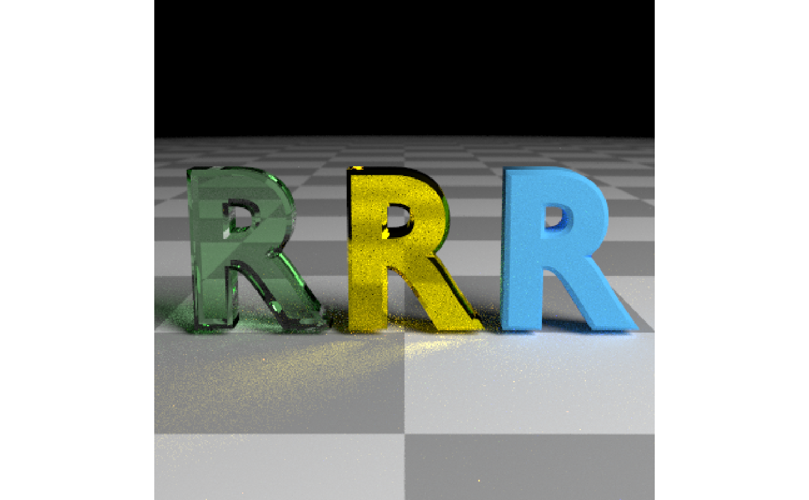
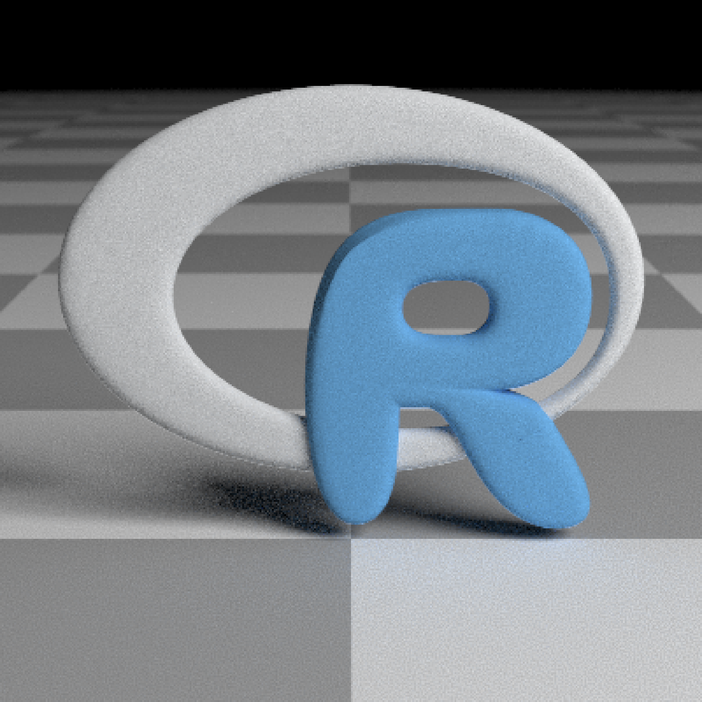

Load an obj file via a filepath. Currently only supports the diffuse texture with the `texture` argument. Note: light importance sampling currently not supported for this shape.
obj_model( filename, x = 0, y = 0, z = 0, scale_obj = 1, texture = FALSE, vertex_colors = FALSE, material = diffuse(), angle = c(0, 0, 0), order_rotation = c(1, 2, 3), flipped = FALSE, scale = c(1, 1, 1) )
| filename | Filename and path to the `obj` file. Can also be a `txt` file, if it's in the correct `obj` internally. |
|---|---|
| x | Default `0`. x-coordinate to offset the model. |
| y | Default `0`. y-coordinate to offset the model. |
| z | Default `0`. z-coordinate to offset the model. |
| scale_obj | Default `1`. Amount to scale the model. Use this to scale the object up or down on all axes, as it is more robust to numerical precision errors than the generic scale option. |
| texture | Default `FALSE`. Whether to load the obj file texture. |
| vertex_colors | Default `FALSE`. Set to `TRUE` if the OBJ file has vertex colors to apply them to the model. |
| material | Default |
| angle | Default `c(0, 0, 0)`. Angle of rotation around the x, y, and z axes, applied in the order specified in `order_rotation`. |
| order_rotation | Default `c(1, 2, 3)`. The order to apply the rotations, referring to "x", "y", and "z". |
| flipped | Default `FALSE`. Whether to flip the normals. |
| scale | Default `c(1, 1, 1)`. Scale transformation in the x, y, and z directions. If this is a single value, number, the object will be scaled uniformly. Note: emissive objects may not currently function correctly when scaled. |
Single row of a tibble describing the obj model in the scene.
#Load the included example R object file, by calling the r_obj() function. This #returns the local file path to the `r.txt` obj file. The file extension is "txt" #due to package constraints, but the file contents are identical and it does not #affect the function. # \donttest{ generate_ground(material = diffuse(checkercolor = "grey50")) %>% add_object(obj_model(y = -0.8, filename = r_obj(), material = metal(color = "gold", fuzz = 0.025))) %>% add_object(obj_model(x = 1.8, y = -0.8, filename = r_obj(), material = diffuse(color = "lightblue"))) %>% add_object(obj_model(x = -1.8, y = -0.8, filename = r_obj() , material = dielectric(color = "pink"))) %>% add_object(sphere(z = 20, x = 20, y = 20, radius = 10, material = light(intensity = 20))) %>% render_scene(parallel = TRUE, samples = 500, tonemap = "reinhold", aperture = 0.05, fov = 32, lookfrom = c(0, 2, 10))# } #Use scale_obj to make objects bigger--this is more robust than the generic scale argument. # \donttest{ generate_ground(material = diffuse(checkercolor = "grey50")) %>% add_object(obj_model(y = -0.8, filename = r_obj(), scale_obj = 2, material = diffuse(noise = TRUE, noiseintensity = 10,noisephase=45))) %>% add_object(sphere(z = 20, x = 20, y = 20, radius = 10, material = light(intensity = 10))) %>% render_scene(parallel = TRUE, samples = 500, ambient = TRUE, backgroundhigh="blue", backgroundlow="red", aperture = 0.05, fov = 32, lookfrom = c(0, 2, 10), lookat = c(0,1,0))# }